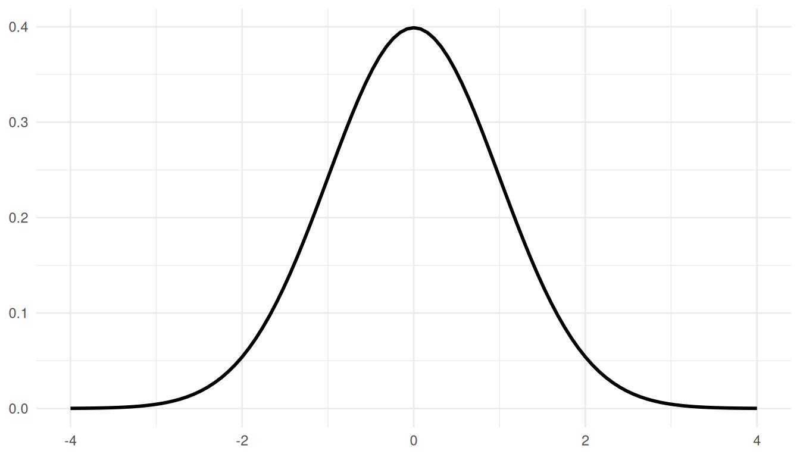
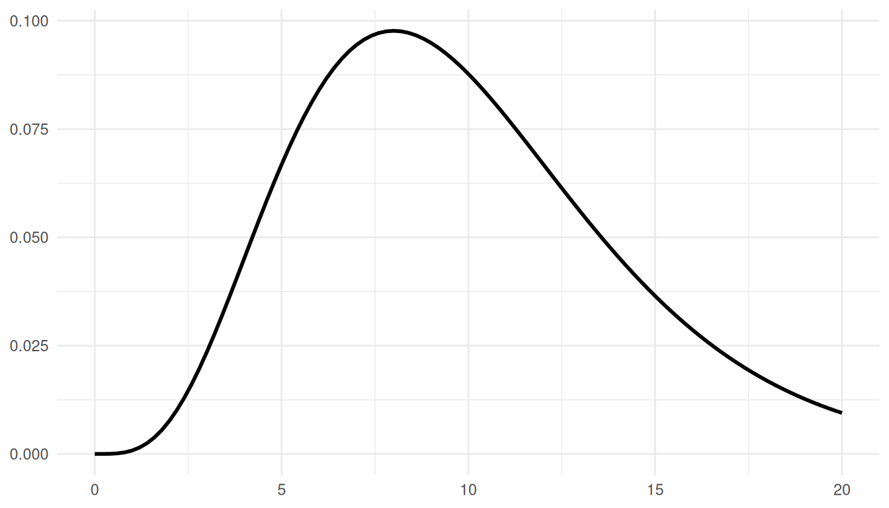
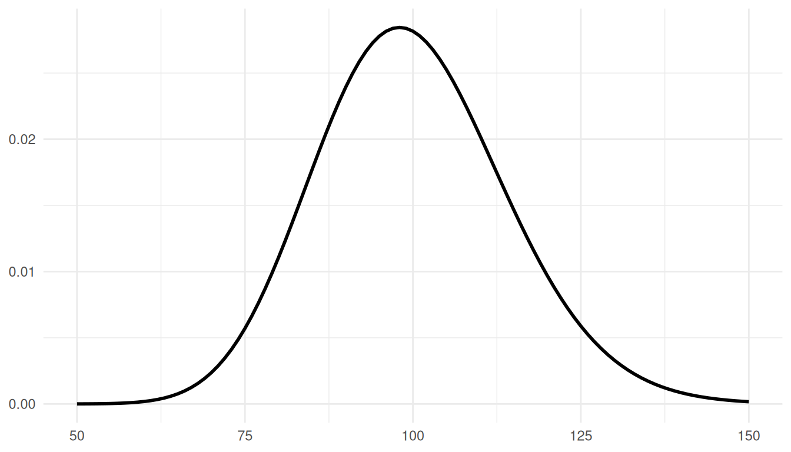
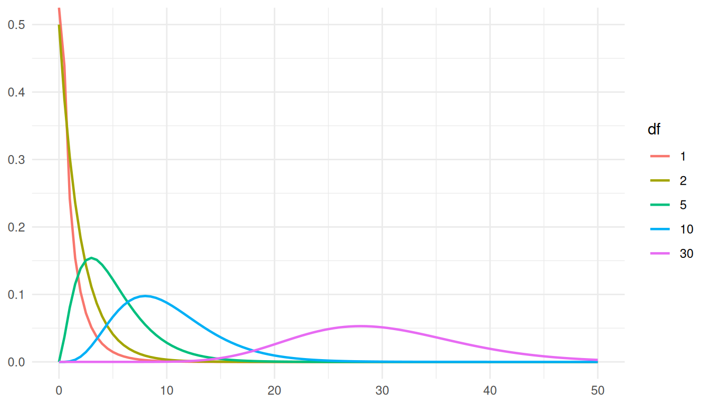

Sampling Distributions
Lisbon Accounting and Business School – Polytechnic University of Lisbon
Introduction
What We’ll Cover
Topics:
- Random Samples and Statistics
- Sampling Distributions of the Sample Mean
- Normal populations (known and unknown \(\sigma\))
- Non-normal populations
- Sampling Distribution of the Sample Variance
- Sampling Distribution of Sample Proportion
- t-Student and Chi-square Distributions
Important Concepts
Random Sample
A sample of size \(n\), drawn from a population according to a random process, is called a random sample if the values of the random variables \(X_1, X_2, \ldots, X_n\) are independent and identically distributed.
- \(X_1\) denotes the first element of the sample
- \(X_2\) denotes the second element
- \(X_n\) denotes the \(n\)-th element
Important Concepts
Statistical Inference
Statistical inference is the use of a set of methods that allows to draw conclusions about a population, from a random sample of that population.
Parameters and Statistics
Parameter
A parameter is a value that characterizes a given population which, although unknown, is fixed.
Examples: population mean \(\mu\), population variance \(\sigma^2\)
Statistic
A statistic is a characteristic that is a function of the sample values; that is, it’s a random variable that does not involve any unknown parameters. If the statistic is used to estimate a parameter, then this statistic is called an estimator.
Symbolized by: \(T(X_1, X_2, \ldots, X_n)\)
Parameters and Statistics
Estimate
An estimate for a parameter is the realized value of a statistic, i.e., the value you obtain from aplying the function statistic to a particular sample.
Given that the sample is random, because it is a collection of realized random variables, the statistic is itself a random variable. Every time you draw a new sample, you obtain a different estimate.
Example: What is a Statistic?
Consider a random sample \((X_1, X_2, \ldots, X_n)\), \(n \in \mathbb{N}\), from a population \(X \sim Normal(\mu = -2, \sigma^2)\), where \(\sigma^2\) is unknown.
Which of the following are statistics?
\(T(X_1, X_2, \ldots, X_n) = X_1 + X_2 + \cdots + X_n\)
\(T(X_1, X_2, \ldots, X_n) = \frac{X_1 + X_2 + \cdots + X_n}{n} = \bar{X}\)
\(T(X_1, X_2, \ldots, X_n) = \frac{\bar{X}}{\sigma}\)
\(T(X_1, X_2, \ldots, X_n) = \frac{\bar{X} - \mu}{\sigma/\sqrt{n}}\)
Example: Solution
- a) YES - Sum of sample values (no unknown parameters)
- b) YES - Sample mean (no unknown parameters)
- c) NO - Contains \(\sigma\) which is unknown
- d) NO - Contains both \(\mu\) (known = -2, so this part is OK) and \(\sigma\) (unknown)
Note: For it to be a statistic, we must be able to calculate it from the sample data alone, without knowledge of unknown population parameters.
Example 2
Let \((X_1,X_2,\dots,X_n),n\in\mathbb{N}\), a random sample from a population \(X\) (with unknown distribution), but with expected value \(\mu\) and variance \(\sigma^2\), both known:
The expected value of \(\sum_{i=1}^n X_i\) and \(\bar{X}\) are:
- \(n\mu\) and \(\mu\)
- \(n\mu\) and \(\mu/n\)
- \(\mu\) and \(\mu/n\)
- None of the above
The variance of \(\sum_{i=1}^n X_i\) and \(\bar{X}\) are:
- \(n\sigma^2\) and \(\sigma^2\)
- \(n\sigma^2\) and \(\sigma^2/n\)
- \(\sigma^2\) and \(\sigma^2/n\)
- None of the above
Answer: (a) and (b)
The sample average as an estimator for \(\mu\)
Suppose you have a random sample \(\{X_i\}_{i=1}^n\). Then we just saw the average is going to be:
\[\bar{X}=\frac{\sum_{i=1}^n X_i}{n}\]
And we saw that \(E[\bar{X}]=\mu\), and \(V[\bar{X}]=\frac{\sigma^2}{n}\). This second result is beautiful. Note that we did not make any assumptions on the distribution of \(X\); if we gather a large sample, its average will be close to the true mean with higher probability.
Distributions for statistics and random variables
A question
How could we obtain the distribution, using a random sample, for a statistic or a random variable?
To answer this, we need to introduce two new distributions (not covered in Statistics I)
\(\chi^2\) distribution
\(\chi^2\) distribution
Let \(Z_1,Z_2,\dots, Z_n\) random variables iid distributed \(Z_i\sim N(0,1)\).
\[Y=\sum_{i=1}^n Z_i^2=\sum_{i=1}^n\left(\frac{X_i-\mu}{\sigma}\right)^2\]
is a random variable distributed \(\chi^2_{\nu}\), where \(\nu\) represents the degrees of freedom.
Degrees of Freedom
Definition
The number of independent values that are free to vary in your data without breaking any constraints.
Formula: \(dof = N - P\)
- \(N\) = sample size
- \(P\) = number of parameters estimated
The Intuitive Example
Imagine you have 4 numbers that must average to 20.
- First person picks: 15 ✓ (free to choose)
- Second person picks: 30 ✓ (free to choose)
- Third person picks: 10 ✓ (free to choose)
- Fourth person picks: ? ✗ (not free!)
The fourth number must be 25 to keep the average at 20.
Result: 3 degrees of freedom (\(df = 4 - 1 = 3\))
Why Degrees of Freedom Matter
In Practice:
- ✓ More \(df\) → More reliable estimates
- ✓ Affects the shape of distributions (\(t\), \(\chi^2\), \(F\))
Key Insight:
When you estimate a parameter (like the mean), you “spend” one degree of freedom. It’s the cost of using your data to calculate statistics.
Back to the \(\chi^2\) Distribution
\(X\sim N(0,1)\)
Back to the \(\chi^2\) Distribution
How is \(Y=X^2\) distributed?

This is the \(\chi^2_1\)!
Back to the \(\chi^2\) Distribution
How is \(Y_1+Y_2=X_1^2+X_2^2\) distributed?

This is the \(\chi^2_2\)!
Back to the \(\chi^2\) Distribution
How is \(\sum_{i=1}^{10} Y_i\) distributed?
This is the \(\chi^2_{10}\)!
Back to the \(\chi^2\) Distribution
How is \(\sum_{i=1}^{100} Y_i\) distributed?
This is the \(\chi^2_{100}\)!
Properties of \(\chi^2\)
Key Properties:
- \(E[Y] = \nu\) (mean equals degrees of freedom)
- \(V[Y] = 2\nu\)
- Right-skewed distribution (not symmetric)
- Only positive values
- Sum property: If \(Q_1 \sim \chi^2_{\nu_1}\) and \(Q_2 \sim \chi^2_{\nu_2}\) are independent, then \(Q_1 + Q_2 \sim \chi^2_{\nu_1 + \nu_2}\)
\(\chi^2\) Distribution Shape
\(\chi^2\) distributions for different degrees of freedom. As \(\nu\) increases, the distribution becomes more symmetric.
\(\chi^2\) Distribution Shape
\[\nu\rightarrow\infty\ \Rightarrow\ \chi^2_{\nu}\rightarrow N(\nu,2\nu)\]
Thanks to the Central Limit Theorem (forthcoming). Note that this equivalent to say that,
\[\nu\rightarrow\infty\ \Rightarrow\ Z_n=\frac{\chi^2_{\nu}-\nu}{\sqrt{2\nu}}\sim N(0,1)\]
Using \(\chi^2\) Tables
For a \(\chi^2\) distribution with \(\nu\) degrees of freedom:
- Tables provide: \(P(Y > \chi^2_{\alpha, \nu}) = \alpha\)
- Important: Not symmetric, so \(\chi^2_{1-\alpha, \nu} \neq -\chi^2_{\alpha, \nu}\)
Example: For \(\nu = 10\):
- \(\chi^2_{0.05, 10} = 18.307\) means \(P(Y > 18.307) = 0.05\)
- \(\chi^2_{0.95, 10} = 3.940\) means \(P(Y > 3.940) = 0.95\)
Exercise
Let \(\{Z_i\}_{i=1}^5\) a random sample from a population \(N(0,1)\) and \(Y=\sum_{i=1}^5Z_i^2\)
- T/F \(P(1.610<Y<9.236)=0.8\)
- T/F The standard deviation of \(Z_3^2+Z_4^2\) is equal to 4.
Exercise
- \(Y\sim \chi^2_5\) and then \[ \begin{aligned} P(1.61<Y<9.236)&=P(Y>1.61)-P(Y>9.236)\\&=0.9-0.1=0.8 \end{aligned} \]
- \(Z_3^2\sim \chi_1^2\), \(Z_4^2\sim \chi_1^2\), then \(Z_3^2+Z_4^2\sim \chi_2^2\): \[V[Z_3^2+Z_4^2]=2\times 2 = 4\ \Rightarrow\ \sigma = 2\]
t-Student Distribution
The t-Student Distribution
Let \(X\sim N(0,1)\) and \(Y\sim \chi^2_\nu\), independent random variables. Then, the random variable \[T=\frac{X}{\sqrt{\frac{Y}{\nu}}}\sim t_\nu\]
has a \(t-student\) distribution with \(\nu\) degrees of freedom, i.e. \(T\sim t_\nu\)
Properties of t-Student
Key Properties:
- Symmetric around zero: \(E[T] = 0\) (for \(\nu > 1\))
- Variance: \(Var[T] = \frac{\nu}{\nu - 2}\) (for \(\nu > 2\))
- As \(\nu \to \infty\): \(t_\nu \to N(0,1)\)
- Heavier tails than the standard normal distribution
- Shape depends on degrees of freedom \(\nu\)
t-Student vs. Normal Distribution

The t-distribution (red) has heavier tails than the Normal (dashed). As \(\nu\) increases, it approaches the Normal distribution.
Using t-Student Tables
For a t-Student distribution with \(\nu\) degrees of freedom:
- Tables typically provide: \(P(T > t_{\alpha, \nu}) = \alpha\)
- Due to symmetry: \(t_{1-\alpha, \nu} = -t_{\alpha, \nu}\)
Example: For \(\nu = 10\) and \(\alpha = 0.05\):
- \(t_{0.05, 10} = 1.812\)
- This means: \(P(T > 1.812) = 0.05\)
- By symmetry: \(P(T < -1.812) = 0.05\)
Exercise
Consider the rv \(T\sim t_{11}\).
- T/F For \(P(T\leq k)=0.75\), it must be that \(k=0.303\).
- \(P(|T|>2.201)\) is:
- \(0.025\)
- \(0.95\)
- \(0.05\)
- None of the above.
Exercise
- \(P(T\leq k)=0.75\ \Leftrightarrow\ P(T>k)=0.25\ \Leftrightarrow\ k=0.697\)
- \(P(|T|>2.201)=2P(T>2.201)=2\times 0.025=0.05\)
Sampling Distribution of the Mean
Case 1: Normal Population, \(\sigma\) Known
Setup:
- Population: \(X \sim N(\mu, \sigma)\) with \(\sigma^2\) known
- Random sample: \((X_1, X_2, \ldots, X_n)\) where \(X_i \sim N(\mu, \sigma)\)
- Statistic: Sample mean \(\bar{X} = \frac{1}{n}\sum_{i=1}^{n} X_i\)
Case 1: Normal Population, \(\sigma\) Known
Sampling Distribution:
By the additivity theorem for Normal distributions:
\[\bar{X} \sim N\left(\mu, \frac{\sigma}{\sqrt{n}}\right) \Leftrightarrow Z = \frac{\bar{X} - \mu}{\sigma/\sqrt{n}} \sim N(0, 1)\]
Case 2: Normal Population, \(\sigma\) Unknown
Setup:
- Population: \(X \sim N(\mu, \sigma)\) with \(\sigma^2\) unknown
- Random sample: \((X_1, X_2, \ldots, X_n)\)
- Statistic: Sample mean \(\bar{X} = \frac{1}{n}\sum_{i=1}^{n} X_i\)
Case 2: Normal Population, \(\sigma\) Unknown
Sampling Distribution:
We must use the sample standard deviation:
\[T = \frac{\bar{X} - \mu}{S/\sqrt{n-1}} = \frac{\bar{X} - \mu}{S'/\sqrt{n}} \sim t_{n-1}\]
where \(S' = \sqrt{\frac{n}{n-1}}S\) is the corrected sample standard deviation.
Important Note
When to Use t vs. Z
- It’s rare to know \(\sigma^2\) without knowing \(\mu\)
- In practice, we almost always use the t-Student distribution
- We estimate \(\sigma\) using the sample standard deviation \(S\) or \(S'\)
- The t-distribution accounts for the uncertainty from estimating \(\sigma\)
Important Note
Thus:
\[S^2=\frac{1}{n}\sum_{i=1}^n (X_i-\bar{X})^2\] and
\[S'^2=\frac{1}{n-1}\sum_{i=1}^n (X_i-\bar{X})^2=\frac{n}{n-1}S^2\]
Important Note
If we have a large enough sample (larger than 30), we can, from the sample, approximate the distribution of \(\mu\), using the TLC (again, forthcoming):
\[Z=\frac{\bar{X}-\mu}{\frac{S}{\sqrt{n-1}}}=\frac{\bar{X}-\mu}{\frac{S'}{\sqrt{n}}}\overset{\cdot}{\sim}N(0,1)\]
Case 3: Unknown Population, Large Sample
Setup:
- Population: Unknown distribution with mean \(\mu\) and variance \(\sigma^2\) known
- Random sample: \((X_1, X_2, \ldots, X_n)\) with \(n \geq 30\)
- Statistic: Sample mean \(\bar{X} = \frac{1}{n}\sum_{i=1}^{n} X_i\)
Case 3: Unknown Population, Large Sample
Approximate Sampling Distribution (by CLT):
For \(n\) sufficiently large (\(n \geq 30\)), by the Central Limit Theorem:
\[Z = \frac{\bar{X} - \mu}{\sigma/\sqrt{n}} \underbrace{\overset{\cdot}{\sim}}_{CLT} N(0, 1)\]
Case 3: Unknown Population, Large Sample
Note:
If \(\sigma^2\) is unknown, the aproximate sampling distribution is given by: \[Z=\frac{\bar{X}-\mu}{\frac{S}{\sqrt{n-1}}}=\frac{\bar{X}-\mu}{\frac{S'}{\sqrt{n}}}\underbrace{\overset{\cdot}{\sim}}_{CLT}N(0,1)\]
Central Limit Theorem (CLT)
Central Limit Theorem
Regardless of the population distribution, as the sample size \(n\) increases, the sampling distribution of \(\bar{X}\) approaches a Normal distribution with:
- Mean: \(E[\bar{X}] = \mu\)
- Standard Deviation: \(\sqrt{V[\bar{X}]} = \sigma/\sqrt{n}\)
This is one of the most important theorems in statistics!
Case 3 (Continued): \(\sigma\) Unknown, Large Sample
When \(\sigma\) is unknown and \(n > 30\):
\[Z = \frac{\bar{X} - \mu}{S/(n-1)^{1/2}} = \frac{\bar{X} - \mu}{S'/\sqrt{n}} \overset{CLT}{\sim} N(0, 1)\]
- The t-distribution with many degrees of freedom is approximately Normal
- For practical purposes, \(t_{n-1} \approx N(0,1)\) when \(n > 30\)
Summary: Which Distribution to Use?
| Population | \(\sigma\) | Sample Size | Use |
|---|---|---|---|
| Normal | Known | Any \(n\) | \(Z \sim N(0,1)\) |
| Normal | Unknown | Any \(n\) | \(T \sim t_{n-1}\) |
| Normal | Unknown | \(n > 30\) | \(Z \sim N(0,1)\) (approx.) |
| Unknown | Known | \(n \geq 30\) | \(Z \sim N(0,1)\) (CLT) |
| Unknown | Unknown | \(n > 30\) | \(Z \sim N(0,1)\) (CLT) |
Exercise 7
A company wishes to validate the value (in euros) of its accounts receivable from clients, assuming the underlying distribution of account values is \(\text{Normal}(\mu = 385,\; \sigma = ?)\).
A random sample of 25 client accounts (independent) was selected, yielding a corrected sample standard deviation \(s' = 122.6\) euros.
a) \(\boxed{V}\) \(\boxed{F}\) The sampling distribution of the mean value of client accounts is \(t_{(25)}\).
b) \(\boxed{V}\) \(\boxed{F}\) The required sample size (assuming the corrected sample standard deviation remains the same) so that the sample mean does not deviate from the population mean by more than 20 euros in 90% of cases is \(n = 102\). (Assume that the value of \(n\) to be found will be greater than 30.)
Exercise 7 — Solution a)
Population: \(X \sim N(\mu = 385,\; \sigma = ?)\) (standard deviation unknown)
Sample: \(n = 25\); \(s' = 122.6\)
The sampling distribution of the sample mean (mean value of client accounts) is given by:
\[ T = \frac{\bar{X} - \mu}{\dfrac{S'}{\sqrt{n}}} \sim t_{(n-1)} \equiv t_{(24)} \]
The statement claims \(t_{(25)}\), but the correct distribution is \(t_{(24)}\).
The statement is False.
Exercise 7 — Solution b)
Population: \(X \sim N(\mu = 385,\; \sigma = ?)\) | Sample: \(n \geq 30\); \(s' = 122.6\)
Since \(n \geq 30\), by the CLT:
\[ \bar{X} \;\underset{\text{approx. by CLT}}{\sim}\; N\!\left(\mu,\; \frac{s'}{\sqrt{n}}\right) \equiv N\!\left(385,\; \frac{122.6}{\sqrt{n}}\right) \]
We want \(P(|\bar{X} - \mu| < 20) = 0.9\):
\[ P\!\left(|Z| < \frac{20}{\dfrac{122.6}{\sqrt{n}}}\right) = 0.9 \;\Leftrightarrow\; P\!\left(|Z| > \frac{20}{\dfrac{122.6}{\sqrt{n}}}\right) = 0.1 \]
\[ \Leftrightarrow\; \frac{20}{\dfrac{122.6}{\sqrt{n}}} = 1.645 \;\Leftrightarrow\; n \geq 102 \]
The statement is True.
Sampling Distribution of the Variance
Distribution of Sample Variance
Setup:
- Population: \(X \sim N(\mu, \sigma)\) with \(\mu\) unknown and variance \(\sigma^2\)
- Random sample: \((X_1, X_2, \ldots, X_n)\) where \(X_i \sim N(\mu, \sigma)\)
- Statistics:
- Sample variance: \(S^2 = \frac{1}{n}\sum_{i=1}^{n}(X_i - \bar{X})^2\)
- Corrected sample variance: \(S'^2 = \frac{1}{n-1}\sum_{i=1}^{n}(X_i - \bar{X})^2 = \frac{n}{n-1}S^2\)
Sampling Distribution of Variance
Result:
\[Q = \frac{(n-1)S'^2}{\sigma^2} = \frac{nS^2}{\sigma^2} \sim \chi^2_{n-1}\]
Note
- The chi-square distribution has \(n-1\) degrees of freedom
- We lose one degree of freedom because we estimate \(\mu\) with \(\bar{X}\)
- This result is only exact for Normal populations
Why Do We Lose a Degree of Freedom?
When calculating \(S^2 = \frac{1}{n}\sum_{i=1}^{n}(X_i - \bar{X})^2\):
- We have \(n\) observations: \(X_1, X_2, \ldots, X_n\)
- But we use \(\bar{X}\) (calculated from the data) instead of \(\mu\)
- The \(n\) deviations \((X_i - \bar{X})\) must sum to zero
- Therefore, only \(n-1\) of them are “free” to vary
- We say we have \(n-1\) degrees of freedom
Exercise 8
A pharmaceutical company produces tablets in which the variability of the amount of active substance from one tablet to another must be very small. The population standard deviation is supposedly one milligram. Inspectors from the Ministry of Health selected a random sample of 16 tablets.
Assuming the population is Normal, the probability that the corrected sample variance exceeds \(0.736\;\text{mg}^2\) is:
a) 0.76 b) 0.25 c) 0.75 d) none of the above
Exercise 8 — Solution
Population: \(X \sim N(\mu,\; \sigma)\), with \(\sigma = 1\) (i.e. \(\sigma^2 = 1\))
Sample: \(n = 16\)
Pivot quantity:
\[ Q = \frac{(n-1)\,S'^2}{\sigma^2} = \frac{15\,S'^2}{1} = 15\,S'^2 \sim \chi^2_{(n-1)} \equiv \chi^2_{(15)} \]
We want:
\[ P(S'^2 > 0.736) = P(Q > 15 \times 0.736) = P(Q > 11.04) \]
Reading directly from the \(\chi^2\) table with 15 degrees of freedom:
\[ P(Q > 11.04) \approx 0.75 \]
The correct answer is c).
Sampling Distribution of a Proportion
Bernoulli Population
Setup:
- Population: \(X \sim Bernoulli(p)\) where
- \(P(X=1) = p\) (success)
- \(P(X=0) = 1-p = q\) (failure)
- Parameters: \(E[X] = p\) and \(V[X] = p(1-p) = pq\)
- Random sample: \((X_1, X_2, \ldots, X_n)\)
Sample Proportion
The sample proportion is just the sample mean for a Bernoulli population:
\[\hat{p} = \bar{X} = \frac{X_1 + X_2 + \cdots + X_n}{n} = \frac{\text{number of successes}}{n}\]
First case
Let \(Y=\sum_{i=1}^n X_i\), the total amount of successes. Then \(Y\) has a sample distribution:
\[Y=\sum_{i=1}^m\sim Binomial(n,p)\]
If \(n\) is large enough, we can apply the \(CLT\) to get an approximate sample distribution: \[Y\overset{\cdot}{\sim} N\left(np,\sqrt{np(1-p)}\right)\Leftrightarrow Z_n=\frac{Y-np}{\sqrt{np(1-p)}}\overset{\cdot}{\sim}N(0,1)\]
Second case
Let the statistic \(\bar{X}=\frac{1}{n}\sum_{i=1}^n X_i = \frac{Y}{n}\) the proportion of successess that, in a sample of size \(n\), have some characteristic.
It is of interest to know the sampling distribution of \(\bar{X}=\hat{p}\)
Expected Value and Variance:
\[E[\bar{X}] = E[\hat{p}] = p\]
\[V[\bar{X}] = V[\hat{p}] = \frac{p(1-p)}{n} = \frac{pq}{n}\]
Approximate Distribution (by CLT)
When \(n \to \infty\), the Central Limit Theorem gives us:
\[\bar{X} = \hat{p} \overset{CLT}{\sim} N\left(p, \sqrt{\frac{p(1-p)}{n}}\right)\]
Equivalently:
\[Z_n = \frac{\bar{X} - p}{\sqrt{p(1-p)/n}} = \frac{\hat{p} - p}{\sqrt{pq/n}} \overset{CLT}{\sim} N(0, 1)\]
Exercise 10
In a certain neighborhood, the proportion of residents who consider useful the opening of a new supermarket is 0.8. The Sweet Drop supermarket chain intends to open a new store in this neighborhood. Nevertheless, before making a decision, a study was conducted in which 400 residents were casually interviewed to assess their intention to use the services of the new supermarket.
a) \(\boxed{V}\) \(\boxed{F}\) The approximate probability that in the sample of interviewed residents there are at least 300 who consider useful the opening of the Sweet Drop supermarket is equal to 0.9948.
b) \(\boxed{V}\) \(\boxed{F}\) The probability that the deviation between the sample proportion of residents who stated they would actually use the services of the new supermarket and the true proportion is less than 0.02 is 0.8413.
Exercise 10 — Solution a)
\(p = 0.8\) (proportion of residents who consider the opening useful)
a) \(X \to\) number of residents, out of 400, who find the opening of the new supermarket useful
\[X \sim \text{Binomial}(n = 400,\; p = 0.8)\]
\[ \begin{align} P(X \geq 300) &= P(X \geq 299.5) \;\underset{1)}{\approx}\; P\!\left(Z \geq \frac{299.5 - 400 \times 0.8}{\sqrt{400 \times 0.8 \times 0.2}}\right) \\[8pt] &= P(Z \geq -2.56) = P(Z \leq 2.56) = \Phi(2.56) = 0.9948 \end{align} \]
Obs:
Continuity correction
CLT, approximation of the Binomial distribution to the Normal distribution
\[Z = \frac{X - np}{\sqrt{np(1-p)}} \sim N(0,1)\]
The statement is true.
Exercise 10 — Solution b)
b) From the interviews conducted, \(X\) residents out of \(n\) stated they would use Sweet Drop, thus the sample proportion is \(\dfrac{X}{n}\).
\[ \begin{align} P\!\left(\left|\frac{X}{n} - p\right| < 0.02\right) &\;\underset{1)}{\approx}\; P\!\left(|Z| < \frac{0.02}{\sqrt{\dfrac{0.8 \times 0.2}{400}}}\right) = P(|Z| < 1) \\[8pt] &= P(-1 < Z < 1) = \Phi(1) - \Phi(-1) = \Phi(1) - [1 - \Phi(1)] \\[8pt] &= 2\Phi(1) - 1 = 2 \times 0.8413 - 1 = 0.6826 \end{align} \]
Obs: 1) Note that we have \(\dfrac{x - np}{\sqrt{np(1-p)}} = \dfrac{\dfrac{x}{n} - p}{\sqrt{\dfrac{p(1-p)}{n}}} = \dfrac{\dfrac{x}{n} - p}{\sqrt{\dfrac{p(1-p)}{n}}}\) and that, by CLT,
\[Z = \frac{X - np}{\sqrt{np(1-p)}} \sim N(0,1) \text{ and therefore, also } Z = \frac{\dfrac{X}{n} - p}{\sqrt{\dfrac{p(1-p)}{n}}} \sim N(0,1)\]
The statement is false.
Key Takeaways
Summary: Sampling Distributions
What We Learned:
- Statistics are functions of sample data with no unknown parameters
- t-Student distribution is used when \(\sigma\) is unknown (Normal population)
- Chi-square distribution describes the sampling distribution of variance
- Central Limit Theorem allows us to use Normal approximation for large samples
- Sample proportions from Bernoulli populations are approximately Normal (large \(n\))
Practical Guidelines
Choosing the Right Distribution:
- Small sample, Normal pop., \(\sigma\) unknown → Use \(t_{n-1}\)
- Large sample (\(n > 30\)) → Use \(N(0,1)\) (CLT)
- Variance problems, Normal pop. → Use \(\chi^2_{n-1}\)
- Proportions, large sample → Use \(N(0,1)\) (CLT)
Important
Always check assumptions before applying these results!
Next Steps
In the next lectures:
- Point Estimation
- Confidence Intervals
- Hypothesis Testing
These all build on our understanding of sampling distributions!
References
:book: Murteira, B.; Silva Ribeiro, C.; Andrade e Silva, J. & Pimenta, C. (2010). Introdução à Estatística. Escolar Editora, McGraw-Hill.
:book: Newbold, P., Carlson, W., & Thorne, B. (2022). Statistics for Business and Economics Global Edition (10th Ed.). Pearson.
Questions?
:email: pfagandini@iscal.ipl.pt

Statistics II | Sampling Distributions